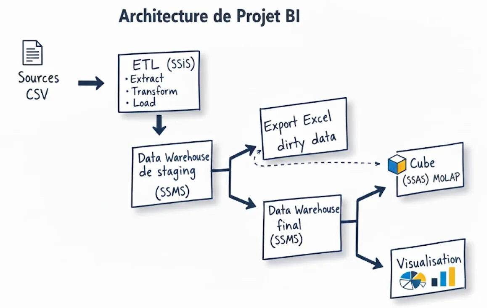

01Overview
Overview
- Context
- Business Intelligence module, National School of Applied Sciences of Tétouan (ENSA Tétouan), 2025-2026
- Area
- Data & BI
- Stack
- SQL Server
- SSIS
- SSAS
- Power BI
- T-SQL
02The problem
The problem
University data is spread across several sources, which makes it hard to keep consistent and to analyse. The project covers the complete BI lifecycle: raw CSV data, ETL, data warehouse, OLAP cube and dashboards.
03What I built
What I built
- An SSIS master package that removes duplicates, handles nulls, standardises dates and emails, corrects gender values, cleans names and rejects grades outside 0-20.
- Invalid records are redirected to an Excel file for correction and reintegration, so nothing is silently lost.
- A staging database, then a star-schema warehouse loaded with surrogate keys and incremental updates.
- An SSAS MOLAP cube with course and academic-date hierarchies (year, semester, quarter).
- Three Power BI dashboards: university overview, student performance and course analysis.
04Gallery
Gallery

